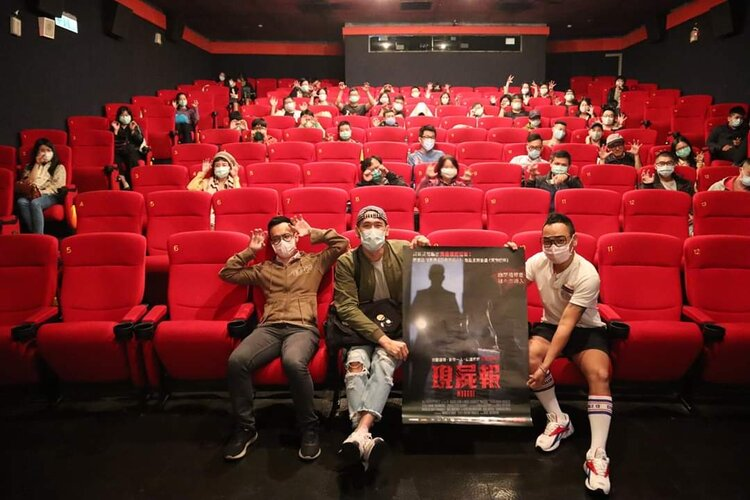
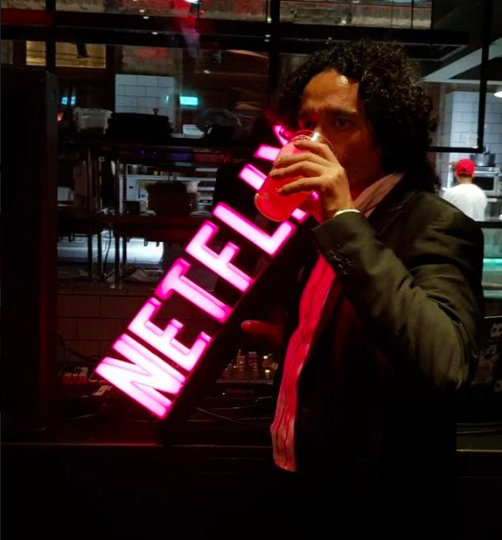
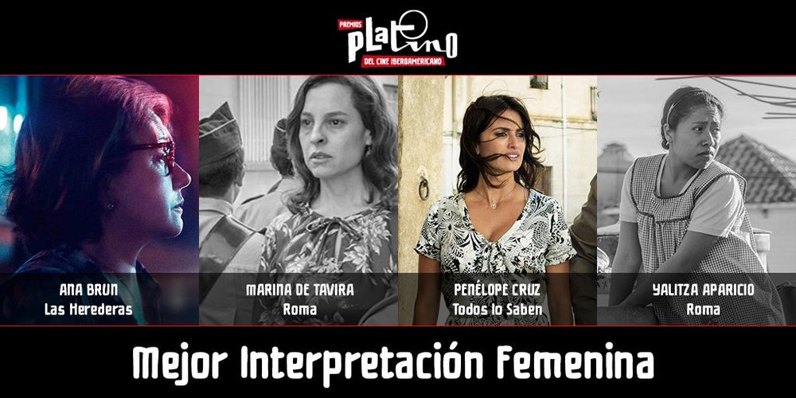
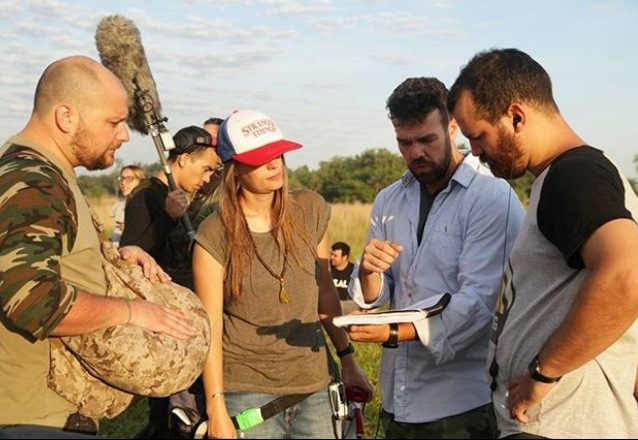

- 7 Cajas
- Los Buscadores
- Hamaca Paraguaya
- Latas Vacias
- Guaraní
Recomendadas:
 |
 |
 |
 |
 |
 |
 |
 |
 |
Entrevistas:


LA PELÍCULA PARAGUAYA MORGUE SE ESTRENA EN TAIWÁNLa película que sorprendió al público local con su historia de terror el año pasado, Morgue, del director Hugo Cardozo, llegó hasta los cines de Taiwán. El pasado jueves 30 de abril el largometraje tuvo su estreno en el país oriental, bajo estrictas medidas de sanidad, en razón de la pandemia del Covid-19 que ha generado el cierre de diversas salas de cine alrededor del mundo al igual que en el país. Según comentó, la llegada de filme al país oriental se dio gracias al trabajo del agente de ventas del filme que logró venderla a distribuidores de Asia y otros continentes. “Me siento orgulloso de poder llevar la bandera del cine nacional a otros países, es un logro no solo mío sino de todos los paraguayos”, destacó el director del filme que cuenta con 81 minutos de extensión y cuenta con un guion elaborado a partir de experiencias vividas por varias personas que frecuentaron los pasillos del hospital e incluso pasaron la noche por el recinto, al acompañar a sus parientes internados.Leer nota completa... |
EL ACTOR Y MIEMBRO DE LA ACADEMIA DE CINE JAVIER ENCISO MOREL PARTICIPA EN "O MECANISMO" SERIE DE NETFLIXDurante el año 2018 el Actor Javier Enciso Morel es convocado a formar parte del Elenco Principal de la controversial serie O MECANISMO emitida por la prestigiosa y afamada Plataforma de Streaming en Internet NETFLIX. El mismo accedió a esta oportunidad mediante un casting On Line realizado por los productores de la mencionada serie junto con otros reconocidos actores paraguayos, accediendo a un papel secundario de gran relevancia dentro del contexto de una historia ficcionada que relata los procesos políticos que atraviesa el vecino país de Brasil con relación al caso LAVA JATO que desestabilizo a la política gubernamental desatando un escándalo con consecuencias hasta nuestros días. La Serie O MECANISMO, Creada y Dirigida por José Padilla – Tropa de Elite 1 y 2, Robocop, NARCOS - estrena su segunda temporada luego de una polémica primera temporada que la situó como la Sexta Serie más vista de NETFLIX BRASIL alcanzando los cuarenta millones de espectadores y generando una expectativa de setenta millones de espectadores para esta segunda entrega que incluye un capítulo rodado en Ciudad del Este.Leer nota completa... |
LAS HEREDERAS, COPRODUCCIÓN PARAGUAYA, FINALISTA EN LA VI EDICIÓN DE LOS PREMIOS PLATINO DEL CINE IBEROAMERICANOLa película paraguaya “Las Herederas” logró cinco nominaciones a los Premios Platino del Cine Iberoamericano. La opera prima de Marcelo Martinessi competirá con la mexicana “Roma”.La ceremonia que celebra a lo más destacado del cine iberoamericano anunció a los nominados para su edición 2019. El multipremiado filme nacional que arrasó en prestigiosos festivales en 2018, logró cinco nominaciones compitiendo con largometrajes de gran éxito. “Mejor Guión”, “Mejor Dirección de Fotografía”, “Mejor Ópera Prima de Ficción Iberoamericana”, “Mejor Interpretación femenina” para Ana Brun y la categoría especial al “Cine en Educación y Valores”. Brun compite con la reconocida actriz española Penélope Cruz por su protagónico en “Todos lo saben”, de Asghar Farhadi, así como las mexicanas Yalitza Aparicio y Marina de Tavira por la película de Alfonso Cuarón para Nétflix, “Roma”.Leer nota completa... |
LEAL, LA PRIMERA PELÍCULA PARAGUAYA EN LLEGAR A NETFLIX.ras ser un éxito total en cartelera de cines en nuestro país en el 2018, 100.000 boletos vendidos los compañeros de LEAL anunciaron una buena noticia: a partir del 1 marzo LEAL está disponible en Netflix, la plataforma multimedia más famosa del mundo. El film, escrito por el argentino Andrés Gelós y dirigido por académicos Rodrigo Salomón y Pietro Scappini, tendrá tres opciones de idiomas en la configuración de subtítulos: español, portugués e inglés, para este último llevará como título The last runway. “Sabemos que para ingresar a la grilla de Netflix es necesario cumplir varios requisitos técnicos, por lo que estamos muy orgullos de decir que estamos a la altura de grandes producciones; además, vemos esto como una oportunidad de llevar nuestro cine a lugares a los cuales no llegaríamos de otra manera”, agregó María Victoria Ramírez Jou, productora ejecutiva de Leal. Pietro Scapinni para EFE declaraba " se abre una puerta gigante" a toda la industria audiovisual paraguaya.Leer nota completa... |